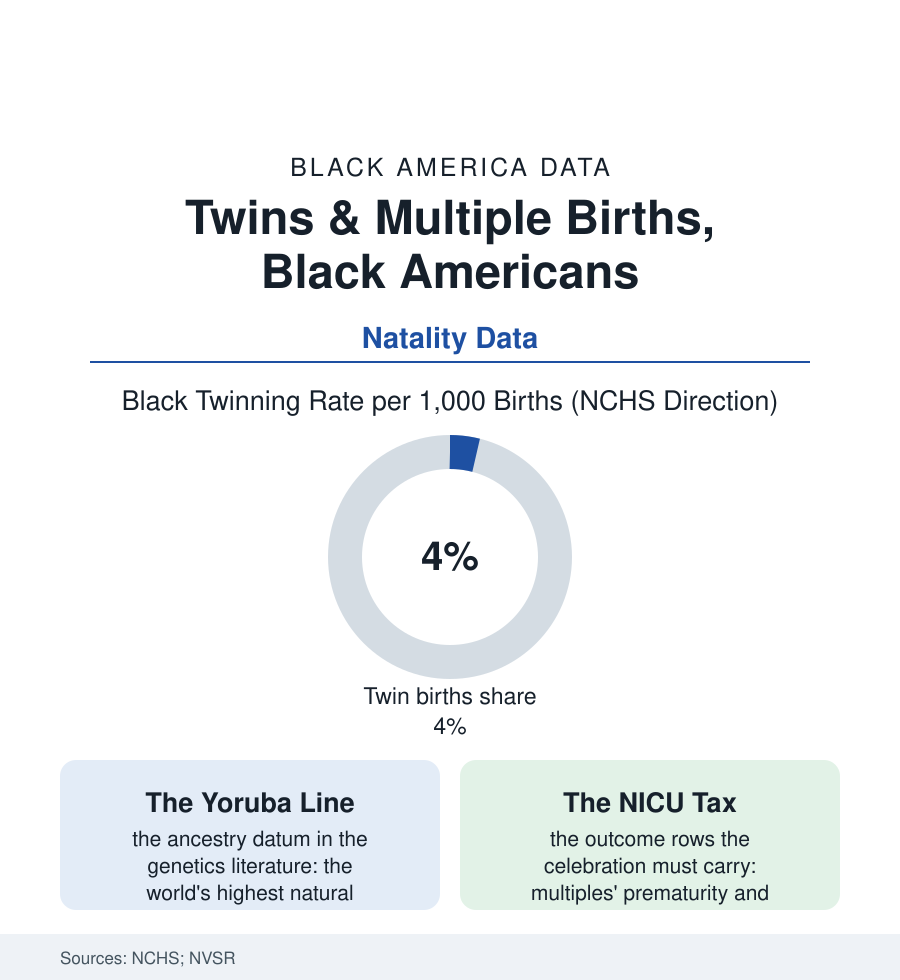

Black Census
Twice Blessed: Twins and Multiple Births in the Natality Data
Black mothers have the highest natural twinning rate in America — a demographic distinction with West African roots, an IVF-era twist, and consequences that run from the nursery budget to the NICU. The twins file.

Tucked inside the federal birth tables is one of this population's most distinctive demographic signatures: Black mothers twin at the highest rate of any major group in America — roughly four sets in every hundred births in the recent natality data, against a national figure nearer three — a difference written in ancestry, reshaped by medicine, and felt in every budget and birth plan it touches. This article reads the twins file.
The Trait and the Technology
The natural history comes first in the demographic literature: dizygotic twinning — the two-egg kind, the heritable kind — varies across human populations more than almost any reproductive trait, and its world map peaks in West Africa (the Yoruba rates of the Nigerian data standing as the global maximum in the classic studies) and runs lowest in East Asia, the diaspora's birth data inheriting the geography: the elevated Black American rate as, in the demographer's cold and lovely phrase, a living archive — ancestry measurable in the maternity ward. The maternal-age gradient rides on top (the older mother's ovaries releasing two eggs at rising rates — the trait's interaction with the delayed-childbearing file's Black professional rows), and then the technology era scrambled the table: the fertility treatments of the late twentieth century multiplied multiples across every group — the IVF cycles transferring multiple embryos, the ovulation drugs' unmonitored cycles in the cheaper tiers of the fertility file — the national twinning rate climbing by half across three decades before the single-embryo-transfer standard pulled the highest-order multiples back down, the Black rate holding its lead through both eras in the NCHS series like a watermark. The higher-order rows (the triplets and beyond) follow the technology's curve almost exactly — their racial distribution tracking the fertility industry's access map rather than ancestry's — the file's two mechanisms separable in the data at a glance: nature wrote the twins, medicine wrote the litters, and the recent guidelines are un-writing the second at a pace the NICU data bless.
The Consequences, Counted Honestly
The twins file refuses to be only a curiosity, because the outcomes data attach weight to it: the multiple pregnancy as the obstetric file's high-risk category entire — the prematurity rates for twins running near sixty percent in the natality data against the singletons' tenth, the low-birthweight rows, the NICU admissions, the mother's own risk ledger (the preeclampsia and gestational-diabetes rows of the maternal file, elevated again) — the elevated Black twinning rate feeding, at the population level, a measurable slice of the prematurity gap this book's health section audits, the blessing and the burden arriving in the same bassinet, times two. The household economics are the census file's own: the twin household's costs front-loaded with a brutality the family-budget research documents (two of everything at the most expensive developmental moment, the childcare file's rates doubled at a stroke, the parental-leave arithmetic of the employment file halved per child), the kin system's famous elasticity — the grandmother file, the church's meal trains doubled — absorbing what the budget cannot, and the twinship's cultural surplus running the other way in the qualitative record: the twins as the family's celebrities, the matching-outfit economy of the retail file, the twin festivals and the twin registries, the adult twins' bond the psychology literature measures as its own attachment category. The file's forward rows are the fertility file's: the single-embryo standard narrowing the technology's multiples toward the natural rate, the natural rate itself drifting with the age structure — the demographers projecting the Black twinning distinction to persist, an ancestral signature in the twenty-first century's most medicalized demographic document. The birth certificate records plurality in a checkbox. The checkbox, in this population, records a homeland.
Reading the Twins Data
The twins file is the census section's smallest marvel: a trait carried across an ocean, legible in the vital statistics, doubling nurseries and NICU bills alike. The NCHS publishes the rates. The grandmothers — who said the family 'has twins,' in the tone of people reciting a genealogy — published it first, and the data have yet to catch up with their certainty. Twice over, as the family always said.
More in Black Census
The Black Population of the United States: Size, Definitions, and Distribution
The Black population of the United States totals 52.8 million — 15.4 percent of the nation. How the Census Bureau defines and counts the population, and where it lives.
Black Median Household Income in the United States
Black median household income stands at $56,490 in the Census Bureau's annual income report — how the figure is measured, how it compares, and what drives it.
The Black Poverty Rate: Levels, Children, and the Long Trend
The official Black poverty rate is 17.1 percent — against 11.1 percent nationally and 7.7 percent for non-Hispanic White Americans. How poverty is measured and what the data show.
Source: CDC National Center for Health Statistics natality data; National Vital Statistics Reports; obstetric and demographic research.